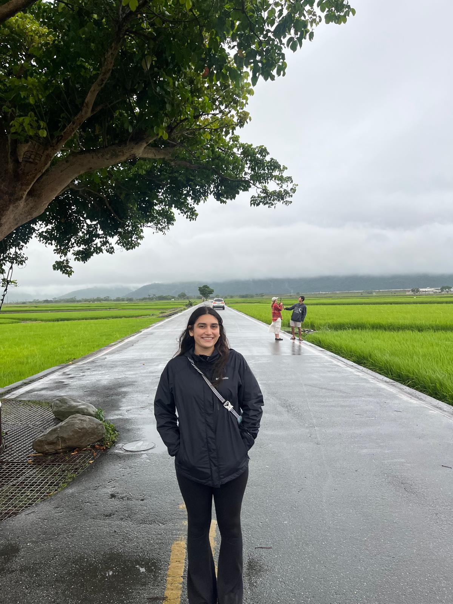

Über mich
Hallo, ich bin Sophia!
Ich studiere International Business mit dem Schwerpunkt Marketing. Mein Auslandsjahr habe ich an der National Taipei University of Technology (NTUT) in Taiwan absolviert.
Ich habe mich für Taiwan entschieden, weil ich gerne in Ostasien leben, eine neue Kultur kennenlernen und eine spannende neue Erfahrung machen wollte.
Während meines Auslandsjahres in Taiwan konnte ich nicht nur internationale Erfahrungen sammeln, sondern auch meine Kenntnisse in Marketing und Kommunikation vertiefen. Besonders spannend war es für mich, zu entdecken, wie künstliche Intelligenz kreativ und strategisch mit diesen Bereichen kombiniert werden kann.
Auf dieser Website möchte ich meine persönlichen Erfahrungen teilen und anderen Studierenden helfen, die ein Auslandssemester in Taiwan planen. Gleichzeitig möchte ich diejenigen inspirieren, die vielleicht noch überlegen, ob Taiwan das richtige Ziel für sie ist.